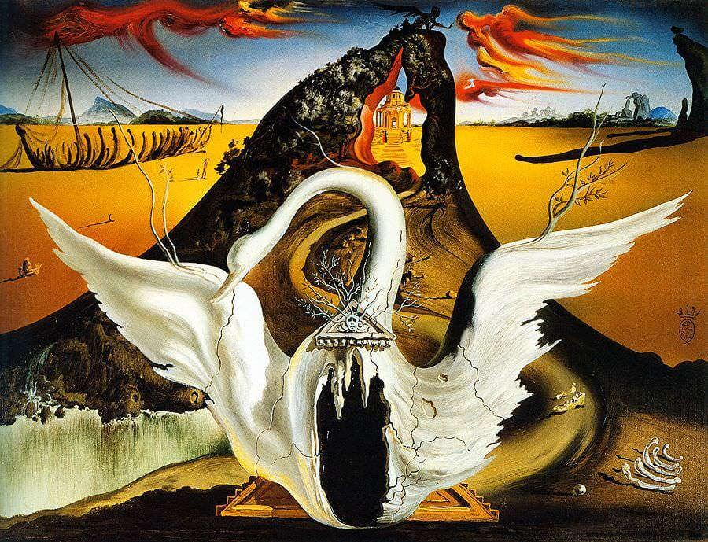
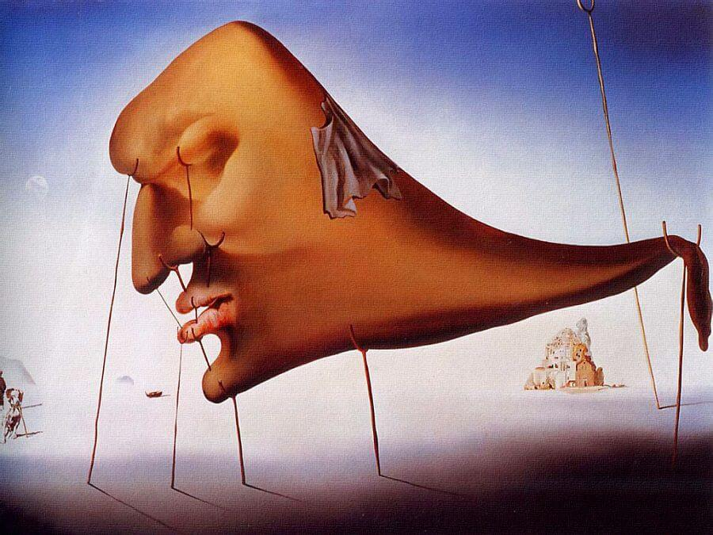

A Spanish Surrealist artist renowned for his technical skill, precise draftsmanship and the striking and bizarre images in his work. Major themes in his work include dreams, the subconscious, sexuality, religion, science and his closest personal relationships.
Salvador Dali is among the most versatile and prolific artists of the 20th century and the most famous Surrealist. Though chiefly remembered for his painterly output, in the course of his long career he successfully turned to sculpture, printmaking, fashion, advertising, writing, and, perhaps most famously, filmmaking.